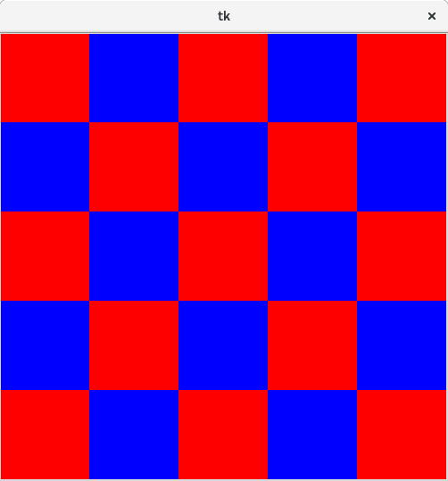

Il seguente codice chiede tre numeri in input e ne calcola la radice quadrata
import math n1 = int(input("Inserisci il primo numero: ")) n2 = int(input("Inserisci il secondo numero: ")) n3 = int(input("Inserisci il terzo numero: ")) if n1 < 0: print("Errore: " + str(n1) + " è un numero negativo") else: print(math.sqrt(n1)) if n2 < 0: print("Errore: " + str(n2) + " è un numero negativo") else: print(math.sqrt(n2)) if n3 < 0: print("Errore: " + str(n3) + " è un numero negativo") else: print(math.sqrt(n3))
Scrivere una funzione, di nome stampa_radice_quadrata con un parametro che racchiuda un blocco if/else, ma che al posto di n1,n2, ecc. usi il parametro ricevuto.
Riscrivere il codice sopra usando questa funzione dove opportuno.
Scrivere poi una funzione stampa_errore, sempre di un parametro, che stampi il messaggio di errore nel caso il parametro ricevuto sia un numero negativo.
Riscrivere il codice che usa stampa_radice_quadrata aggiungendo anche stampa_errore.
Domanda: si vuole modificare il codice affinché calcoli la radice quarta (che si ottiene usando due volte la radice quadrata), inoltre si cambia il messaggio di errore a "Impossibile calcolare la radice quarta di" + str(n).
Quante righe vengono modificate nel codice che usa le funzioni? Quante invece ne servirebbero nel codice originale?
Il computer esegue istruzioni in modo deterministico: date certe condizioni di partenza, il risultato è sempre lo stesso.
Per introdurre casualità nel programma si utilizza spesso un cosiddetto random number generator (generatore di numeri casuali).
Un RNG in genere ottiene casualità da eventi imprevedibili nel computer (temperatura di un componente, tempo passato dall'inizio del programma, generatori hardware di rumore bianco, ...) e poi continua a generare eventuali nuovi numeri usando tecniche matematiche deterministiche (linear congruential generator, Mersenne-Twister, ...).
In python il modulo random, presente nella libreria standard, offre funzioni per generare numeri casuali.
Usare help o internet per capire il funzionamento della funzione random.randint, e usarla nell'interprete per simulare il lancio di
un dado a 6 facce.
def f(): print("A") g() print("B") def g(): print("C") print("D") f()
Senza eseguirlo, cosa stampa il programma qui sopra?
Si modifica g() nel seguente modo:
def g(): print("C") f() print("D")
Cosa dovrebbe succedere? Esegui il programma modificato. (Usare Ctrl+C per terminare il programma nell'interprete)
Si hanno tre palline di colori diversi, e ci si domanda in quanti modi possono essere messe in fila.
Si trova facilmente che la prima pallina si può scegliere in 3 modi, la seconda in 2 e l'ultima è quella esclusa, quindi ci sono 3*2*1 = 6 modi in totale.
In generale, si dimostra che con n palline ci sarebbero n*(n-1)*(n-2)*...*1 modi di disporle.
L'espressione riportata sopra si chiama fattoriale di n e si indica in matematica con n! (punto esclamativo dopo il numero di cui si vuole fare il fattoriale).
Scrivere un funzione che calcoli il fattoriale di n, usando un while e return.
I cicli iterativi sono un concetto fondamentale nella programmazione imperativa, e hanno le loro radici nel modo di concepire il calcolatore creato da Alan Turing, che prima ancora dell'invenzione del computer ne aveva descritto le proprietà attraverso il modello matematico ora detto Turing machine.
Diverso, ma equivalente al modello di Turing machine, c'è il cosidetto lambda calcolo, inventato da Alonzo Church in contemporanea a Turing. Nel lambda calcolo non c'è l'iterazione, ma solo funzioni e certe regole che ne determinano l'utilizzo. I linguaggi basati principalmente sulle funzioni si chiamano linguaggio funzionali, in contrasto con i linguaggi imperativi. Alcuni famosi: Lisp (anni 60), Haskell (moderno).
Python è un linguaggio imperativo, tuttavia si può trovare qualche aspetto funzionale: uno di questi è la ricorsione, tecnica con cui una funzione chiama se stessa per ottenere lo stesso risultato di un ciclo. Ad esempio, questa funzione calcola il fattoriale usando la ricorsione:
def factorial(n): if n == 0: return 1 return n * factorial(n-1)
Si potrebbe in modo simile riscrivere il codice dell'esercizio 11 della prima settimana.
Si consideri il seguente codice:
a = "albero" def f(): a = "mela" print(a) def g(): print(a) f() g()
Cosa dovrebbe stampare? Indovina e poi prova ad eseguirlo.
Il risultato è abbastanza sorprendente.
La funzione g, che non ha nessuna variabile a definita al suo interno, cerca questa variabile nel contesto globale del programma (global scope). Trova la variabile a con il valore di "albero" e utilizza quella, una variabile nel contesto globale si dice variabile globale, ed è visibile a tutte le funzioni.
La funzione f invece ridefinisce la variabile a, però questa modifica non si propaga al contesto globale (infatti la chiamata successiva a g() stampa "albero"). Infatti ogni funzione ha un proprio contesto locale, e le variabili definite all'interno della funzione non sono visibili esternamente.
Se una variabile definita nel contesto locale ha lo stesso nome di una variabile del contesto globale si ha il cosiddetto aliasing.
Per ottenere il comportamento opposto, provare a inserire l'istruzione global a nella prima riga della funzione f.
Scarica il modulo easydraw e salvalo sul computer.
Aprirlo con IDLE ed eseguirlo, dopodiché sarà possibile fare import easydraw dall'interprete.
Usa help per esaminare le funzioni del modulo e la loro documentazione.
I colori sono stringhe che possono contenere o i nomi dei colori più comuni (red, blue, green, ecc..) oppure la codifica RGB (red-green-blue) esadecimale del colore (ad esempio "#FF0000" è il rosso, "#FFFFFF" il bianco, "#000000" il nero).
Si può usare un color picker online per ottenere il colore che si vuole in rappresentazione RGB esadecimale.
Usare il modulo per fare dei disegni. Un esempio:
